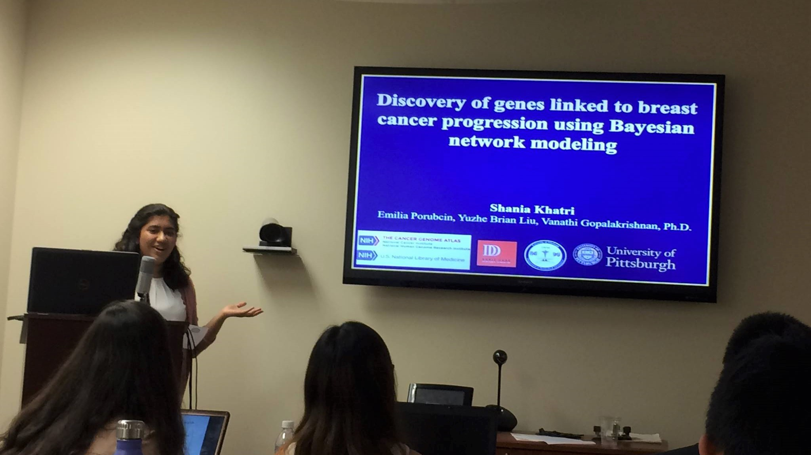

Hi! I'm Shania Khatri and I'm currently a Junior at Fox Chapel Area High School in Pittsburgh PA. My passions are biology
and computer science, and I imagine a future in which computer algorithms help us discover new and exciting things about
the data we gather every day. My current work focuses around the field of Bioinformatics in which I've been fortunate
enough to conduct research at the University of Pittsburgh to find a potential novel cancer gene using Bayesian Networks.
You can read about my research here.
Some of my other work includes Code Like A Girl which is a program I founded in order
to help girls get interested in the field of computer science. I'm also the founder of The Education Initative
which is a fundraiser I started in order to provide laptops for The Children's Institute in Pittsburgh.
Finally I have a variety of other coding and programming projects which you can find on my GitHub page.
You can read more about any of my projects by following the links above, or by visiting the appropiate page from my
homepage. If you'd like to get in touch with me, just send me an email at shania@khatri.io.
Scientific Research

This past summer I was given the opportunity to conduct research at the University of Pittsburgh. My research involved finding possible novel breast cancer genes using bayesian networks to analyze relationships between genes.
As a result of my successful research I was invited to present at the AMIA 2016 anual symposium in Chicago. You can read a short abstract of my presentation here.
Code Like A Girl
The Code Like A Girl initiative was founded in order to provide an environment where girls can feel comfortable pursuing their interests in computer science.
By providing classes targed at young girls in elementary and middle school, as well as providing older girls as mentors the CLG initiative aims to remove the barriers that younger girls face as well as
provide them with role models to guide them on a path where they will likely be a minority for the forseeable future. You can read more about the project at the Code Like A Girl website
The Education Initative
The Education Initative is a project to raise funds for The Children's Institute. Based in Pittsburgh Pennsylvania, with many locations, TCI serves as a rehabilitation hospital for
kids that need physical and occupational therapy, a day school for special needs children to participate in school, an outpatient therapy clinic, and much more!
I was a patient at TCI for over 2 years, first in their outpatient therapy clinic, then inpatient, then outpatient again. The money raised here will be donated to TCI's
rehabilitation hospital. From there TCI will purchase laptops and the laptops will be placed in the inpatient rehabilitation hospital where kids will be free to use them!
If you'd like to donate, please visit my gofundme page for the project here.
Other Projects
This page is for other small projects that I've done or am currently working on. Check out my github page for a good up to date list of my current projects as well as some code.
Finally if you'd like to get in touch, follow the link below to send me an email!